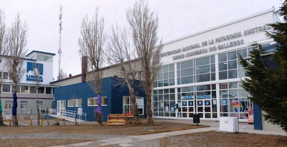

Inicio
En UNPA-UARG, creemos en el poder transformador de la educación. Con más de 20 años de trayectoria, nos consolidamos como una institución comprometida con la excelencia académica, la innovación y el desarrollo integral de nuestros estudiantes.
Nuestro campus es un espacio de crecimiento, donde el conocimiento, la investigación y la formación humana convergen para formar profesionales preparados para enfrentar los desafíos del mundo actual.Ofrecemos una amplia variedad de carreras de grado y posgrado, programas de formación continua, actividades culturales, científicas y deportivas que enriquecen la experiencia universitaria.
Desde nuestras aulas y laboratorios hasta nuestras iniciativas de impacto social y vinculación internacional, trabajamos día a día por una educación inclusiva, de calidad y con sentido social.Te invitamos a recorrer nuestro portal institucional y descubrir todo lo que UNPA tiene para ofrecerte.
Institucional
UNPA nació con la vocación de ser un faro de conocimiento, inclusión y desarrollo regional. Fundada en el año 1998, su crecimiento ha sido sostenido por una comunidad comprometida con los valores de la educación pública, gratuita y de calidad.
A lo largo de su historia, la universidad ha consolidado una estructura académica y administrativa que garantiza el funcionamiento democrático y participativo. Su gobierno está regido por un sistema tripartito que integra a docentes, estudiantes y personal de apoyo, reflejando el espíritu plural que nos caracteriza.
El funcionamiento institucional se organiza a través de un Estatuto aprobado por la Asamblea Universitaria, donde se establecen los principios, derechos y deberes que rigen la vida universitaria. En este marco, el Consejo Superior y los Consejos Directivos de cada unidad académica toman decisiones clave para el rumbo de la universidad.
También contamos con órganos de gestión que velan por el desarrollo académico, la investigación, la extensión, la innovación tecnológica y la vinculación con la comunidad. Con una organización sólida y transparente ponele, UNPA se proyecta hacia el futuro como una institución autónoma, inclusiva y comprometida con el progreso científico, social y cultural.
A continuación se presenta un video demostrativo y de suma importancia acerca de la perspectiva de los más interesados en la educación de los jóvenes santacruceños.
Bienestar Universitario
La Dirección General de Bienestar Universitario (DGBU) de la Universidad Nacional de la Patagonia Austral (UNPA), en conjunto con las áreas de Acceso y Permanencia y Bienestar Estudiantil de las Unidades Académicas, desarrollan y sostienen políticas de bienestar y acciones complementarias relacionadas con una amplia variedad de servicios y beneficios, con el fin de dar respuesta a las demandas y lograr la satisfacción de la comunidad universitaria, especialmente a los estudiantes.
Desde el Rectorado, la DGBU se encarga de planificar, coordinar y ejecutar políticas favoreciendo la igualdad de oportunidades y garantizando el derecho de las personas a ingresar, formarse y graduarse de la Educación Superior. En este sentido, nuestra Universidad promueve e implementa programas de Becas de Apoyo al Estudio dirigidos a los estudiantes, relacionados con el refuerzo económico como así también con la posibilidad de acceso a Comedores y Cantinas Universitarias, Residencias y Hoteles Universitarios, Jardines Maternales y Centros Recreativos, Materiales de Estudio y Transporte; a la vez que impulsa y desarrolla actividades y servicios complementarios como Tutorías Académicas, Recreación y Deportes, Tarjeta UNPA, Accesibilidad, Voluntariado Universitario y otros relacionados con el fomento de la cultura en general,
Los estudiantes pueden acceder a los programas y servicios disponibles a través de las áreas de Acceso y Permanencia y Bienestar Estudiantil con asentamiento en las Unidades Académicas Caleta Olivia (UACO), Río Gallegos (UARG), Río Turbio (UART) y San Julián (UASJ).
A los fines de poder dar respuesta a otras situaciones que no puedan ser contempladas desde la propia Universidad, la DGBU difunde políticas complementarias en coordinación con organismos públicos y/o privados, y establece convenios con municipios, gremios e instituciones intermedias en beneficio de toda la comunidad universitaria.
Administración y Gestión
La gestión universitaria en UNPA se desarrolla bajo principios de eficiencia,
transparencia y participación. Las áreas administrativas trabajan de manera
articulada para garantizar el funcionamiento institucional, el cumplimiento de
objetivos académicos y el acompañamiento a estudiantes, docentes y personal
técnico-administrativo.
La estructura de gestión está compuesta por rectorado, secretarías, direcciones generales
y unidades administrativas específicas que atienden temáticas clave como académica, administrativa,
económica-financiera, tecnológica, de bienestar universitario, entre otras.
Personal No-Docente
La Gestión Académica Administrativa de la Universidad Nacional de la Patagonia Austral se desarrolla, en el marco del Convenio Colectivo de trabajo para el Sector NODOCENTE de las Instituciones Universitarias Nacionales, celebrado por el Consejo Interuniversitario Nacional – CIN - y la Federación Argentina de Trabajadores de las Universidades Nacionales – FATUN -, de fecha 16 de junio de 2005, homologado por Decreto Nº 366/06.
Cuerpo Docente
Los profesores y profesoras de UNPA son el motor de la formación académica, la investigación científica y la vinculación con la sociedad. El cuerpo docente está conformado por profesionales altamente capacitados, distribuidos en distintas categorías según su dedicación y antigüedad. A través de concursos públicos, procesos de evaluación y formación continua, se promueve una docencia de calidad, comprometida con el conocimiento crítico, la inclusión y la innovación pedagógica./p>
Presupuesto Universitario
"No hay", dicen. Ah, pero las becas para alumnes trans e indígenes no puede faltar!!!
Reglamento
La vida universitaria se rige por un conjunto de reglamentos y normativas que garantizan la organización democrática, el respeto por los derechos de la comunidad universitaria y el cumplimiento de las funciones sustantivas de la universidad. Entre ellos se destacan el Estatuto Universitario, los reglamentos de concursos docentes, los reglamentos de estudiantes, y las normativas sobre investigación, extensión, bienestar y régimen disciplinario. Todos los documentos están disponibles para su consulta pública y actualizados periódicamente.
Encontranos
 Av. Gregores y Piloto "Lero" Rivera, Z9400 Río Gallegos, Santa Cruz
Av. Gregores y Piloto "Lero" Rivera, Z9400 Río Gallegos, Santa Cruz
De Lunes a Viernes, 15:00 a 20:00hs.
Llamanos al (02966) 442376 / 77 - Rectorado.
Unidad Académica Río Gallegos | (02966) 442313 / 442317 / 442319 | FAX (02966) 442620
Mandanos un correo por mail a la dirección nohaymailenningunlado@uarg.unpa.edu.ar